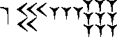
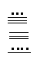
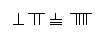
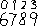

|
Древний Египет
Вавилон
Древняя Греция
Рим
Америка
Китай
Индия
Аравия
Западная Европа
Расшифровка системы счисления, созданной в Египте во времена первой династии (ок. 2850 до н.э.), была существенно облегчена тем, что иероглифические надписи древних египтян были аккуратно вырезаны на каменных монументах. Из этих надписей нам известно, что древние египтяне использовали только десятичную систему счисления. Единицу обозначали одной вертикальной чертой, а для обозначения чисел, меньших 10, нужно было поставить соответствующее число вертикальных штрихов. Чтобы записанные таким образом числа было легко узнавать, вертикальные штрихи иногда объединялись в группы из трех или четырех черт. Для обозначения числа 10, основания системы, египтяне вместо десяти вертикальных черт ввели новый коллективный символ, напоминающий по своим очертаниям подкову. Множество из десяти подковообразных символов, т.е. число 100, они заменили другим новым символом, напоминающим силки; десять силков, т.е. число 1000, египтяне обозначили стилизованным изображением лотоса. Продолжая в том же духе, египтяне обозначили десять лотосов согнутым пальцем, десять согнутых пальцев - волнистой линией и десять волнистых линий - фигуркой удивленного человека. В итоге древние египтяне могли представлять числа до миллиона. Так, например, с помощью коллективных символов и повторений уже введенных символов число 6789 в иероглифических обозначениях можно было бы записать как
Развитие способов представления чисел в Месопотамской долине вначале шло так же, как и в долине Нила, но затем жители Междуречья ввели совершенно новый принцип. Вавилоняне делали записи острой палочкой на мягких глиняных табличках, которые затем обжигались на солнце или в печи. Эти записи оказались исключительно долговечными, а потому, в отличие от египетских папирусов, дошедших до нас в весьма малом числе экземпляров, в музеях мира хранятся десятки тысяч клинописных табличек. Через некоторое время после того, как Аккад завоевал шумеров, система счисления в Месопотамии стала шестидесятиричной, хотя сохранилось также и основание 10.
Для малых чисел вавилонская система счисления в основных чертах напоминала египетскую. Одна вертикальная клинообразная черта (в раннешумерских табличках - небольшой полукруг) означала единицу; повторенный нужное число раз, этот знак служил для записи чисел меньше десяти; для обозначения числа 10 вавилоняне, как и египтяне, ввели новый коллективный символ - более широкий клиновидный знак с острием, направленным влево, напоминающий по форме угловую скобку,
Повторенный соответствующее число раз, этот знак служил для обозначения чисел 20, 30, 40 и 50. Принцип повторного использования знаков позволял, например, записать число 59 в виде
Но для записи чисел больше 59 древние вавилоняне впервые использовали новый принцип - одно из самых выдающихся достижений в развитии систем обозначений чисел - принцип позиционности, т.е. зависимости значения символа от его местоположения в записи числа. Вавилоняне заметили, что в качестве коллективных символов более высокого порядка можно применять уже ранее использованные символы, если они будут занимать в записи числа новое положение левее предыдущих символов. Так, один клиновидный знак мог использоваться для обозначения и 1, и 60, и 602, и 603, в зависимости от занимаемого им в записи числа положения, подобно тому, как единица в наших обозначениях используется в записях и 10, и 102, и 103, и в числе 1111. При обозначении чисел больше 60 знаки, выступающие в новом качестве, отличались от старых тем, что символы разбивались на "места", или "позиции", и единицы более высокого порядка располагались слева. При таком способе записи для обозначения сколь угодно больших чисел уже не нужно было других символов, кроме уже известных. Например, число 6789 можно было записать так: 
В Древней Греции имели хождение две основных системы счисления - аттическая (или геродианова) и ионическая (она же александрийская или алфавитная). Более ранняя аттическая система счисления использовалась греками, по-видимому, уже к 5 в. до н.э. По существу это была десятичная система (хотя в ней также было выделено и число пять), а аттические обозначения чисел использовали повторы коллективных символов. Черта, обозначавшая единицу, повторенная нужное число раз, означала числа до четырех. После четырех черт греки вместо пяти черт ввели новый символ Г, первую букву слова "пента" (пять) (буква Г употреблялась для обозначения звука "п", а не "г"). Дойдя до десяти, они ввели еще один новый символ , первую букву слова "дека" (десять). Так как система была десятичной, грекам потребовались новые символы для каждой новой степени числа 10: символ H означал 100 (гекатон), X - 1000 (хилиои), символ M - 10000 (мириои или мириада). Используя число 5 как промежуточное подоснование системы счисления, греки на основе принципа умножения комбинировали пятерку с символами степеней числа 10. Так, число 50 они обозначали символом , 500 - символом , 5000 - символом , 50000 - символом . Еще большие числа обычно описывались словами. Число 6789 в аттической системе записывалось в виде .
Римские обозначения чисел известны ныне лучше, чем любая другая древняя система счисления. Объясняется это не столько какими-то особыми достоинствами римской системы, сколько тем огромным влиянием, которым пользовалась Римская империя в сравнительно недавнем прошлом. Старыми римскими символами для обозначения чисел 1, 5, 10, 100 и 1000 были, соответственно, символы I, V, X,,. В целом римляне не были склонны заниматься математикой, поэтому не испытывали особой потребности в больших числах. Тем не менее для обозначения 10000 они эпизодически использовали символ , а для числа 100000 - символ . Половинки этих символов иногда использовались для обозначения чисел 5000 () и 50000 (). Таким образом, в римских обозначениях число 6789 можно было бы записать как .
Исследователи, путешествовавшие в 16 в. по Центральной Америке, обнаружили цивилизации с высокоразвитыми системами счисления, отличными от тех, которые были известны в Европе. Самыми важными элементами в системе счисления майя были использование позиционного принципа и символа нуля. Если отвлечься от того, что принятая у индейцев майя система счисления была не шестидесятиричной, а двадцатиричной и вместо 10 использовала вспомогательное основание 5, то в остальном принципы были аналогичны тем, которые ранее были в ходу у жителей Древнего Вавилона. В схеме майя точка означала единицу, а повторяющиеся точки - числа до четырех; пятерку обозначала горизонтальная черта, а две и три горизонтальные черты обозначали, соответственно, числа десять и пятнадцать. Для обозначения числа двадцать майя воспользовались позиционным принципом, используя точку, помещенную над символом нуля. (Последний имел вид .)
Числа в системе счисления древних майя записывались в столбец, причем верхние символы были старшими. Самая нижняя позиция соответствовала разряду единиц; "этажом выше" располагалось число двадцаток. Еще выше единица соответствовала не кратным числа 400, как можно было бы ожидать, а кратным числа 360. За исключением этого разряда, связанного, с календарными соображениями и продолжительностью года, все остальные более высокие позиции соответствовали степеням числа 20. Число 6789 в системе счисления, принятой у майя, записывалось как

Одна из древнейших систем счисления была создана в Китае, а также в Японии. Эта система возникла как результат оперирования с палочками, выкладываемыми для счета на стол или доску. Числа от единицы до пяти обозначались, соответственно, одной, двумя и т.д. палочками, выкладываемыми вертикально, а одна, две, три или четыре вертикальные палочки, над которыми помещалась одна поперечная палочка, означали числа шесть, семь, восемь и девять. Первые пять кратных числа 10 обозначались одной, двумя, …, пятью горизонтальными палочками, а одна, две, три и четыре горизонтальные палочки, к которым сверху приставлялась вертикальная палочка, означали числа 60, 70, 80 и 90. Для обозначения чисел больше 99 использовался позиционный принцип. Число 6789 китайцы записали бы так: . Обозначения чисел с помощью палочек тесно связано со счетом на пальцах и счетной доске, но применялось оно также и в письменных вычислениях.
Письменных памятников древнеиндийской цивилизации сохранилось очень немного, но, судя по всему, индийские системы счисления проходили в своем развитии те же этапы, что и во всех прочих цивилизациях. На древних надписях из Мохенджо-Даро вертикальная черточка в записи чисел повторяется до тринадцати раз, а группировка символов напоминает ту, которая знакома нам по египетским иероглифическим надписям. В течение некоторого времени имела хождение система счисления, очень напоминающая аттическую, в которой для обозначения чисел 4, 10, 20 и 100 использовались повторения коллективных символов. Эта система, которая называется кхарошти, постепенно уступила место другой, известной под названием брахми, где буквами алфавита обозначались единицы (начиная с четырех), десятки, сотни и тысячи. Переход от кхарошти к брахми происходил в те годы, когда в Греции, вскоре после вторжения в Индию Александра Македонского, ионическая система счисления вытеснила аттическую. Вполне возможно, что переход от кхарошти к брахми происходил под влиянием греков, но сейчас вряд ли возможно хоть как-то проследить или восстановить этот переход от древних индийских форм к системе, от которой произошли наши системы счисления. Надписи, найденные в Нана-Гат и Насике, относящиеся к первым векам до нашей эры и первым векам нашей эры, по-видимому, содержат обозначения чисел, которые были прямыми предшественниками тех, которые получили теперь название индо-арабской системы. Первоначально в этой системе не было ни позиционного принципа, ни символа нуля. Оба эти элементы вошли в индийскую систему к 8-9 вв. вместе с обозначениями деванагари. В индийской системе число 6789 записывалось бы как . Здесь мы впервые встречаемся с элементами современной системы счисления: индийская система была десятичной, цифровой и позиционной. При желании можно даже усмотреть некоторое сходство в начертании современных цифр и цифр деванагари.
Современную систему обозначения чисел часто называют арабской, хотя ясно, что она берет начало не из Аравии. До хиджры арабы записывали числа словами, но затем, как это делали ранее греки, они стали обозначать числа буквами своего алфавита. В 772 г. индийский трактат "Сидданта" был привезен в Багдад и переведен на арабский, после чего стали использоваться две системы записи чисел: (1) в астрономии по-прежнему употребляли алфавитную систему, (2) в торговых расчетах купцы стали применять систему, заимствованную из Индии. Но даже среди тех, кто пользовался индийской системой, начертания цифр, как и в Индии, сильно варьировали. Эти две системы счисления были широко распространены и после распада арабского халифата. В его восточной части пользовались системой, аналогичной той, которая и сейчас встречается в арабском мире. Число 6789 в этой системе записывается как .
Первым европейским ученым, о котором достоверно известно, что он ввел в употребление в Европе арабские цифры, был Герберт, работавший в Испании и позднее (в 999-м) ставший папой Сильвестром II. В 12 в. Хуан из Севильи перевел на латынь трактат De numero indorum (Об индийских числах) арабского математика Аль-Хорезми. Когда в следующем веке индийские обозначения стали широко известными, новая система получила название алгоритм - от искаженного Аль-Хорезми. Через пару столетий европейские алгоритмики одержали верх и над абацистами, и над теми, кто пользовался римскими цифрами в вычислениях с целыми числами, но лишь с 1585 индо-арабская система обозначений, систематически расширяясь, стала использоваться и применительно к дробям. В том же году Симон Стевин опубликовал свой небольшой трактат De Thiende (Десятина), в котором он предложил записывать в виде  или число, которое мы записали бы как 6789.
|